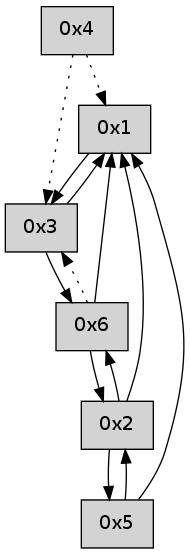

>> << IDX [start] -100 -25 -5 +0 +5 +25 +100 [485.368294001]
 Previous packets
480.005067 beacon06(adaf) #0 coord=01,02,05,03,04,06 cycle=432.0ms assoc 64 25 c0
480.016711 [Hello(3): seq=278 sym=6,1 sysInfo= stat=6:10,0,0,0/1:0,0,0,0]
----------------------------------------------------------------------
480.447212 beacon01(adaf) #0 coord=01,02,05,03,04,06 cycle=432.0ms assoc
-- color-indic=0 64 d1 00
480.457173 beacon02(adaf) #0 coord=01,02,05,03,04,06 cycle=432.0ms assoc 64 80 ff
480.467173 beacon05(adaf) #0 coord=01,02,05,03,04,06 cycle=432.0ms assoc 64 26 d5
480.477174 beacon03(adaf) #0 coord=01,02,05,03,04,06 cycle=432.0ms assoc 64 ba f1
480.487173 beacon04(adaf) #0 coord=01,02,05,03,04,06 cycle=432.0ms assoc 64 1c db
480.497173 beacon06(adaf) #0 coord=01,02,05,03,04,06 cycle=432.0ms assoc 64 68 c7
480.508839 [Hello(4): seq=279 asym=3,1 sysInfo= stat=3:10,0,0,0/1:12,0,0,0]
480.510622 [Hello(1): seq=178 sym=3 sysInfo= stat=3:10,0,0,0]
----------------------------------------------------------------------
480.939320 beacon01(adaf) #0 coord=01,02,05,03,04,06 cycle=432.0ms assoc
-- color-indic=0 64 15 6f
480.949281 beacon02(adaf) #0 coord=01,02,05,03,04,06 cycle=432.0ms assoc 64 44 90
480.959282 beacon05(adaf) #0 coord=01,02,05,03,04,06 cycle=432.0ms assoc 64 e2 ba
480.969280 beacon03(adaf) #0 coord=01,02,05,03,04,06 cycle=432.0ms assoc 64 7e 9e
480.979282 beacon04(adaf) #0 coord=01,02,05,03,04,06 cycle=432.0ms assoc 64 d8 b4
480.989283 beacon06(adaf) #0 coord=01,02,05,03,04,06 cycle=432.0ms assoc 64 ac a8
481.000939 [Hello(3): seq=279 sym=6,1 sysInfo= stat=6:11,0,0,0/1:1,0,0,0]
----------------------------------------------------------------------
481.431428 beacon01(adaf) #0 coord=01,02,05,03,04,06 cycle=432.0ms assoc
-- color-indic=0 64 59 df
481.441389 beacon02(adaf) #0 coord=01,02,05,03,04,06 cycle=432.0ms assoc 64 08 20
481.451388 beacon05(adaf) #0 coord=01,02,05,03,04,06 cycle=432.0ms assoc 64 ae 0a
481.461391 beacon03(adaf) #0 coord=01,02,05,03,04,06 cycle=432.0ms assoc 64 32 2e
481.471391 beacon04(adaf) #0 coord=01,02,05,03,04,06 cycle=432.0ms assoc 64 94 04
481.481389 beacon06(adaf) #0 coord=01,02,05,03,04,06 cycle=432.0ms assoc 64 e0 18
481.493055 [Hello(4): seq=280 asym=3,1 sysInfo= stat=3:11,0,0,0/1:13,0,0,0]
481.497723 [Hello(1): seq=179 sym=3 sysInfo= stat=3:11,0,0,0]
----------------------------------------------------------------------
481.923535 beacon01(adaf) #0 coord=01,02,05,03,04,06 cycle=432.0ms assoc
-- color-indic=0 64 9d b0
481.933496 beacon02(adaf) #0 coord=01,02,05,03,04,06 cycle=432.0ms assoc 64 cc 4f
481.943496 beacon05(adaf) #0 coord=01,02,05,03,04,06 cycle=432.0ms assoc 64 6a 65
481.953496 beacon03(adaf) #0 coord=01,02,05,03,04,06 cycle=432.0ms assoc 64 f6 41
481.963496 beacon04(adaf) #0 coord=01,02,05,03,04,06 cycle=432.0ms assoc 64 50 6b
481.973497 beacon06(adaf) #0 coord=01,02,05,03,04,06 cycle=432.0ms assoc 64 24 77
481.985143 [Hello(3): seq=280 sym=6,1 sysInfo= stat=6:12,0,0,0/1:2,0,0,0]
----------------------------------------------------------------------
482.415643 beacon01(adaf) #0 coord=01,02,05,03,04,06 cycle=432.0ms assoc
-- color-indic=0 64 e5 1d
482.425604 beacon02(adaf) #0 coord=01,02,05,03,04,06 cycle=432.0ms assoc 64 b4 e2
482.435605 beacon05(adaf) #0 coord=01,02,05,03,04,06 cycle=432.0ms assoc 64 12 c8
482.445603 beacon03(adaf) #0 coord=01,02,05,03,04,06 cycle=432.0ms assoc 64 8e ec
482.455604 beacon04(adaf) #0 coord=01,02,05,03,04,06 cycle=432.0ms assoc 64 28 c6
482.465605 beacon06(adaf) #0 coord=01,02,05,03,04,06 cycle=432.0ms assoc 64 5c da
482.477265 [Hello(4): seq=281 asym=3,1 sysInfo= stat=3:12,0,0,0/1:14,0,0,0]
482.480957 [Hello(1): seq=180 sym=3 sysInfo= stat=3:12,0,0,0]
----------------------------------------------------------------------
482.907752 beacon01(adaf) #0 coord=01,02,05,03,04,06 cycle=432.0ms assoc
-- color-indic=0 64 21 72
482.917713 beacon02(adaf) #0 coord=01,02,05,03,04,06 cycle=432.0ms assoc 64 70 8d
482.927713 beacon05(adaf) #0 coord=01,02,05,03,04,06 cycle=432.0ms assoc 64 d6 a7
482.937713 beacon03(adaf) #0 coord=01,02,05,03,04,06 cycle=432.0ms assoc 64 4a 83
482.947713 beacon04(adaf) #0 coord=01,02,05,03,04,06 cycle=432.0ms assoc 64 ec a9
482.957713 beacon06(adaf) #0 coord=01,02,05,03,04,06 cycle=432.0ms assoc 64 98 b5
482.969338 [Hello(3): seq=281 sym=6,1 sysInfo= stat=6:13,0,0,0/1:3,0,0,0]
----------------------------------------------------------------------
483.399859 beacon01(adaf) #0 coord=01,02,05,03,04,06 cycle=432.0ms assoc
-- color-indic=0 64 6d c2
483.409819 beacon02(adaf) #0 coord=01,02,05,03,04,06 cycle=432.0ms assoc 64 3c 3d
483.419820 beacon05(adaf) #0 coord=01,02,05,03,04,06 cycle=432.0ms assoc 64 9a 17
483.429820 beacon03(adaf) #0 coord=01,02,05,03,04,06 cycle=432.0ms assoc 64 06 33
483.439821 beacon04(adaf) #0 coord=01,02,05,03,04,06 cycle=432.0ms assoc 64 a0 19
483.449820 beacon06(adaf) #0 coord=01,02,05,03,04,06 cycle=432.0ms assoc 64 d4 05
483.461182 [Hello(1): seq=181 sym=3 sysInfo= stat=3:13,0,0,0]
483.465131 [Hello(4): seq=282 asym=3,1 sysInfo= stat=3:13,0,0,0/1:15,0,0,0]
----------------------------------------------------------------------
483.891966 beacon01(adaf) #0 coord=01,02,05,03,04,06 cycle=432.0ms assoc
-- color-indic=0 64 a9 ad
483.901927 beacon02(adaf) #0 coord=01,02,05,03,04,06 cycle=432.0ms assoc 64 f8 52
483.911929 beacon05(adaf) #0 coord=01,02,05,03,04,06 cycle=432.0ms assoc 64 5e 78
483.921928 beacon03(adaf) #0 coord=01,02,05,03,04,06 cycle=432.0ms assoc 64 c2 5c
483.931927 beacon04(adaf) #0 coord=01,02,05,03,04,06 cycle=432.0ms assoc 64 64 76
483.941929 beacon06(adaf) #0 coord=01,02,05,03,04,06 cycle=432.0ms assoc 64 10 6a
483.953590 [Hello(3): seq=282 sym=6,1 sysInfo= stat=6:14,0,0,0/1:4,0,0,0]
----------------------------------------------------------------------
484.384074 beacon01(adaf) #0 coord=01,02,05,03,04,06 cycle=432.0ms assoc
-- color-indic=0 64 e4 aa
484.394034 beacon02(adaf) #0 coord=01,02,05,03,04,06 cycle=432.0ms assoc 64 b5 55
484.404035 beacon05(adaf) #0 coord=01,02,05,03,04,06 cycle=432.0ms assoc 64 13 7f
484.414035 beacon03(adaf) #0 coord=01,02,05,03,04,06 cycle=432.0ms assoc 64 8f 5b
484.424036 beacon04(adaf) #0 coord=01,02,05,03,04,06 cycle=432.0ms assoc 64 29 71
484.434035 beacon06(adaf) #0 coord=01,02,05,03,04,06 cycle=432.0ms assoc 64 5d 6d
484.445681 [Hello(4): seq=283 asym=3,1 sysInfo= stat=3:14,0,0,0/1:15,0,0,0]
484.455947 [Hello(1): seq=182 sym=3 sysInfo= stat=3:14,0,0,0]
----------------------------------------------------------------------
484.876182 beacon01(adaf) #0 coord=01,02,05,03,04,06 cycle=432.0ms assoc
-- color-indic=0 64 20 c5
484.886143 beacon02(adaf) #0 coord=01,02,05,03,04,06 cycle=432.0ms assoc 64 71 3a
484.896143 beacon05(adaf) #0 coord=01,02,05,03,04,06 cycle=432.0ms assoc 64 d7 10
484.906143 beacon03(adaf) #0 coord=01,02,05,03,04,06 cycle=432.0ms assoc 64 4b 34
484.916144 beacon04(adaf) #0 coord=01,02,05,03,04,06 cycle=432.0ms assoc 64 ed 1e
484.926144 beacon06(adaf) #0 coord=01,02,05,03,04,06 cycle=432.0ms assoc 64 99 02
484.937791 [Hello(3): seq=283 sym=6,1 sysInfo= stat=6:15,0,0,0/1:5,0,0,0]